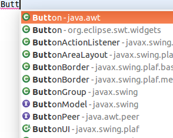
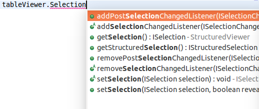

You can remove existing entries via the context menu.

- System Editor; if none: Text Editor (default) will open the system editor associated with the file, if available. If no system editor is associated with the given file, fall back to the Eclipse Text Editor
- Text Editor will always open Eclipse's Text Editor on unassociated file types
- Ask via pop-up will open the same dialog as using Open With > Other... on a file and let you choose which editor to use (inside or outside the IDE)
Keep in mind that in any case, it's possible to assign an editor for an unassociated file type either via this same preference page, or via the Open With > Other... context-menu on the file.
The implementation comes with a new extension-point org.eclipse.ui.ide.unknownEditorStrategy
that allows external contributions of additional strategies.
Note: Problems were found with the Ask via pop-up strategy. We'll fix them in M6.
Old styling:

New toolbar styling:

New default:

Old default:



selection proposes all results containing selection as a substring.

This feature can be disabled using the Show substring matches option on the Java > Editor > Content Assist preference page.
 ) has been added to indicate information severity problems detected by the Eclipse Java Compiler.
) has been added to indicate information severity problems detected by the Eclipse Java Compiler.


Please open the dialog for configuring null annotation types from the project properties at Java Compiler > Errors/Warnings > Null analysis:

In the dialog that opens, only one primary set of annotations is supported — these are the annotations which JDT actively uses in Quick Fixes, error messages etc. These annotations must be present on the project's build path.
You can now add an arbitrary number of secondary null annotation types, to be evaluated when reading class files external to the project. Within the configuration dialog, Content Assist is offered based on accessible annotation types, but for secondary annotation types unresolved names will be tolerated. This avoids the need to bloat the build path with transitive compile-time dependencies.


org.eclipse.ui.handlers.HandlerUtil#getCurrentStructuredSelection(event)
API has been added to allow easy access to an IStructuredSelection from a handler. Compared to
HandlerUtil#getCurrentSelection(event) this removes the need to cast and check for
null.
org.eclipse.core.runtime.ListenerList has been generified and now implements Iterable<E>.
Due to Java type system constraints, ListenerList#getListeners() still returns Object[].
Clients should not only add type arguments to the ListenerList, but also convert usages of #getListeners()
to an enhanced for loop, thereby taking advantage of the type-safe #iterator().
Old:
ListenerList fInputChangeListeners = new ListenerList();
...
Object[] listeners= fInputChangeListeners.getListeners();
for (int i= 0; i < listeners.length; i++) {
((IInputChangedListener) listeners[i]).inputChanged(fInput);
}
New:
ListenerList<IInputChangedListener> fInputChangeListeners = new ListenerList<>();
...
for (IInputChangedListener listener : fInputChangeListeners) {
listener.inputChanged(fInput);
}